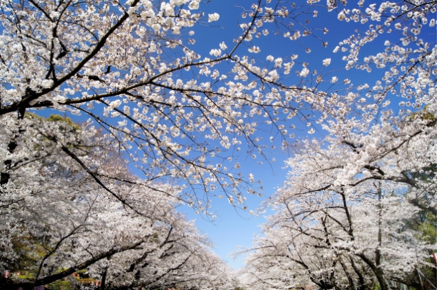
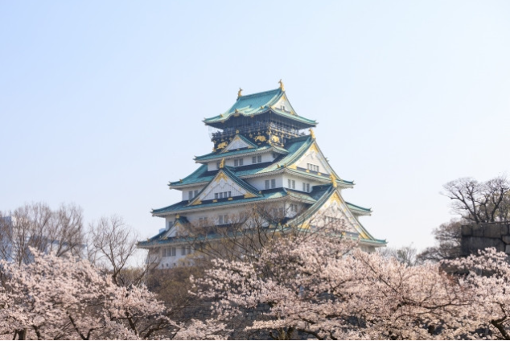
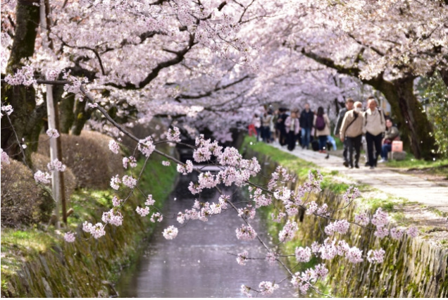
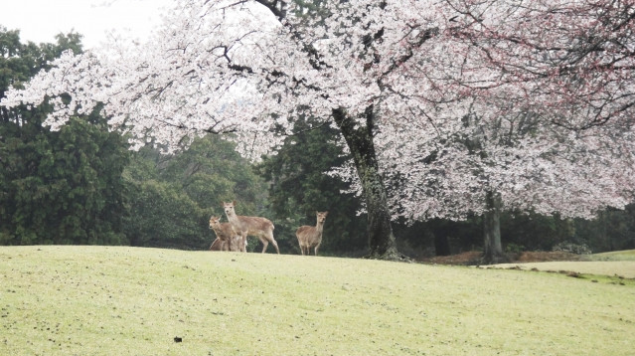
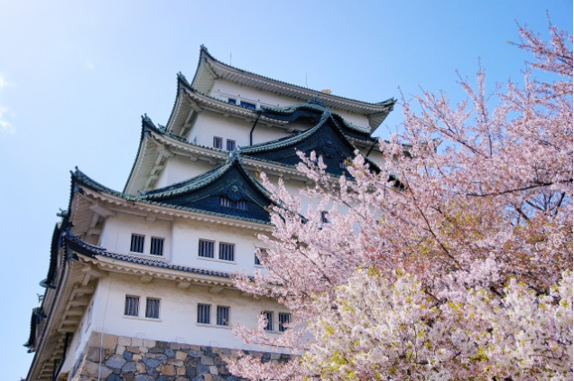
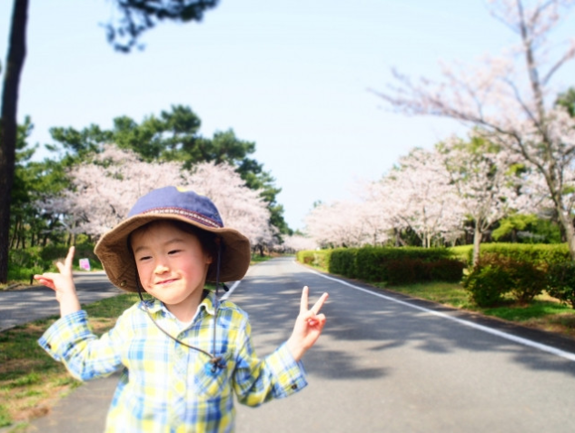
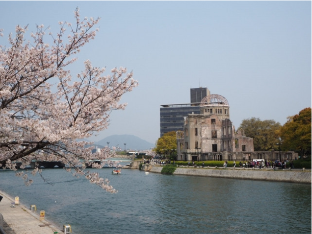
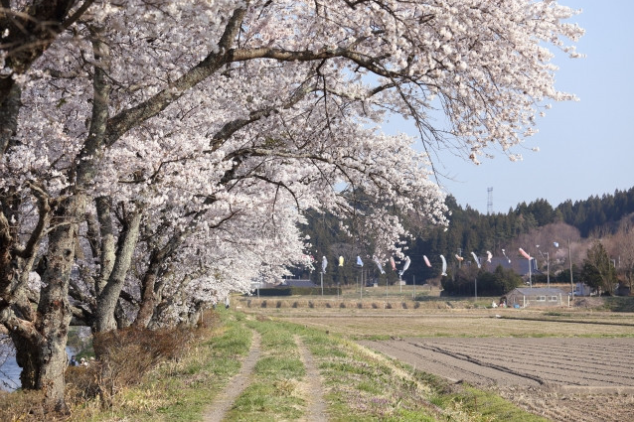
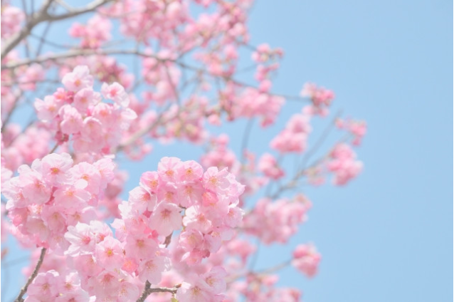
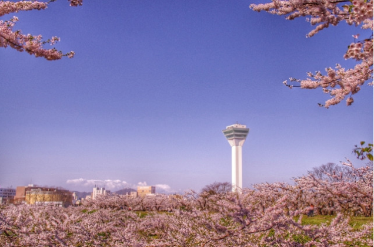

Các địa điểm ngắm hoa anh đào đẹp nhất Nhật Bản
#Du lịch kết hợp với làm việc #Du học #Dành cho người đang sống ở Nhật#Dành cho người không sống ở Nhật;

Nhật Bản, nơi mà hoa anh đào đã trở thành một biểu tượng, cứ mỗi dịp xuân về, người dân lại nô nức đi chiêm ngưỡng vẻ đẹp của loài hoa này. Hanami (花見) là từ tiếng Nhật miêu tả hoạt động cùng nhau đi ngắm hoa, tụ tập trò chuyện và ăn uống vui vẻ dưới những gốc cây anh đào nở rộ – một thú vui, một nét văn hóa đặc trưng của người Nhật trong mùa xuân. Nếu bạn có dịp đến Nhật hoặc đang ở Nhật vào mùa hoa anh đào, thì đừng bỏ lỡ những điểm ngắm hoa vô cùng đặc biệt mà WeXpats giới thiệu sau đây nhé!
Mục lục
- Ngắm hoa anh đào ở Tokyo
- Ngắm hoa anh đào ở Osaka
- Ngắm hoa anh đào ở Kyoto
- Ngắm hoa anh đào ở Nara
- Ngắm hoa anh đào ở Nagoya
- Ngắm hoa anh đào ở Fukuoka
- Ngắm hoa anh đào ở Hiroshima
- Ngắm hoa anh đào ở Fukushima
- Ngắm hoa anh đào ở Nagano
- Ngắm hoa anh đào ở Hokkaido
Ngắm hoa anh đào ở Tokyo

Công viên Ueno là địa điểm ngắm hoa anh đào nổi tiếng và đông đúc nhất tại thủ đô Tokyo, cũng như trên toàn đất nước Nhật Bản. Hai bên con đường chính giữa công viên có hơn 1200 cây hoa anh đào cùng nhau khoe sắc. Khuôn viên nơi đây rất rộng, có nhiều khu vui chơi, giải trí. Ngoài khu vực ngắm hoa ra còn có bảo tàng mỹ thuật và vườn thú nổi tiếng với những chú gấu trúc.
Thời gian hoa nở đẹp: Khoảng cuối tháng 3 đến đầu tháng 4
Phí thăm quan: Miễn phí
Thời gian mở cửa: 5:00～23:00
Địa chỉ: 東京都台東区上野公園5-20
Điện thoại: 03-3828-5644
Ngoài ra, ở Tokyo còn có một số địa điểm ngắm hoa anh đào đẹp khác như Koishikawa Korakuen, Shinjuku Gyoen, Chidori-ga-fuchi.
Ngắm hoa anh đào ở Osaka
Lâu đài Osaka là một nơi không thể không đến đối với những ai đặt chân đến thành phố Osaka. Vào mùa xuân, vẻ đẹp hùng vĩ của lâu đài được tô điểm thêm với hơn 4000 cây hoa anh đào. Nghe nói rằng khung cảnh nên thơ nhất nằm ở công viên Nishinomaru ở thành cổ phía Tây của lâu đài..
Thời gian hoa nở đẹp: Khoảng đầu tháng 4
Phí thăm quan: Miễn phí
Thời gian mở cửa: 9:00 - 17:00 (đón lượt khách cuối 16:30)
Địa chỉ: 〒540-0002 大阪府大阪市中央区大阪城１−１
Điện thoại: 0669413044
Một số địa điểm ngắm hoa anh đào nổi tiếng khác ở Osaka: công viên Kema Sakuranomiya, Osaka Mint Bureau (造幣局,
Zōheikyoku)
Ngắm hoa anh đào ở Kyoto
Cố đô cổ kính với nhiều di tích lịch sử của Nhật Bản sẽ càng làm cho khung cảnh hoa anh đào mùa xuân trở nên lãng mạn. Con đường triết học (Tetsugaku no michi) sẽ là nơi lý tưởng để ngắm hoa cùng bạn bè. Tại đây, bạn sẽ được thưởng thức vẻ đẹp nên thơ với con đường trải dài những cây hoa anh đào rủ xuống bên bờ kênh.
Thời gian hoa nở đẹp: Khoảng đầu tháng 4 đến giữa tháng 4
Phí thăm quan: Miễn phí
Thời gian mở cửa: 24/24
Địa chỉ: 〒606-8406 京都府京都市左京区浄土寺石橋町６１
Các điểm ngắm hoa anh đào khác tại Kyoto: Đền Heian, Đền Daigoji, Công viên Maruyama, Kyoto Gosho, Shirakawa, Arashiyama
Ngắm hoa anh đào ở Nara
Với hơn 1700 cây hoa anh đào, nằm ở phía đông nam từ sảnh chính của đền Todaiji, bạn sẽ tìm thấy một bãi cỏ rộng được bao quanh bởi những cây anh đào, đây chính là công viên Nara, một trong những nơi tuyệt vời để dã ngoại và thưởng thức vẻ đẹp của hoa anh đào.
Thời gian hoa nở đẹp: Khoảng cuối tháng 3
Phí thăm quan: Miễn phí
Thời gian mở cửa: 24/24
Địa chỉ: 奈良県
Điện thoại: 0742220375
Các điểm ngắm hoa anh đào khác ở Nara: Núi Yoshino, Công viên Lâu đài Koriyama
Ngắm hoa anh đào ở Nagoya

Ở lâu đài Nagoya, có thể thấy nhiều cây Yoshino, cây hoa anh đào cành rũ cùng với một số giống anh đào ít được biết đến
được trồng xung quanh công viên.
Thời gian hoa nở đẹp: Khoảng cuối tháng 4
Phí thăm quan: Miễn phí
Thời gian mở cửa: 9:00 ~ 16:30
Địa chỉ: 〒460-0031 愛知県名古屋市中区本丸１−1
Điện thoại: 0522311700
Các điểm ngắm hoa anh đào khác ở Nagoya: Công viên Tsuruma, Công viên Hòa bình Nagoya, Lâu đài Inuyama, Yamazakigawa
Riverside
Ngắm hoa anh đào ở Fukuoka
Một trong những điểm nổi tiếng nhất ở Hiroshima để ngắm hoa anh đào chắc chắn là Công viên Hòa bình Hiroshima. Những cây hoa anh đào bên bờ sông Motoyasu làm cho nó trở thành địa điểm lý tưởng để ngắm hoa bất kể ngày hay đêm.
Thời gian hoa nở đẹp: Cuối tháng 3
Phí thăm quan: Miễn phí
Thời gian mở cửa: 9:30 ~ 17:00
Địa chỉ: 〒811-0321 福岡県東区西戸崎１８−２５
Điện thoại: 0926031111
Các điểm ngắm hoa anh đào khác tại Fukuoka: Công viên Maizuru Castle, Đền Atago
Ngắm hoa anh đào ở Hiroshima
Một trong những điểm nổi tiếng nhất ở Hiroshima để ngắm hoa anh đào chắc chắn là Công viên Hòa bình Hiroshima. Những cây hoa anh đào bên bờ sông Motoyasu làm cho nó trở thành địa điểm lý tưởng để ngắm hoa bất kể ngày hay đêm
Thời gian hoa nở đẹp: Khoảng cuối tháng 3
Phí thăm quan: Miễn phí
Thời gian mở cửa: 24/24
Địa chỉ: 〒730-0811 広島県広島市中区中島町１丁目１
Điện thoại: 0825042390
Các điểm ngắm hoa anh đào khác tại Hiroshima: Lâu đài Hiroshima, Vườn Shukkeien
Ngắm hoa anh đào ở Fukushima
Fukushima là một trong những tỉnh lớn nhất Nhật Bản và do đó mùa hoa anh đào ở đây kéo dài hơn nhiều tỉnh khác. Sông Natsui Senbonzakura là một nơi tuyệt vời để tham quan Khung cảnh thơ mộng bên bờ sông sẽ giúp bạn có được những bức ảnh để đời đấy!
Thời gian hoa nở đẹp: Khoảng giữa tháng 4 đến cuối tháng 4
Phí thăm quan: Miễn phí
Thời gian mở cửa: 24/24
Địa chỉ: 〒963-3312 福島県田村郡小野町夏井町屋１１９
Các điểm ngắm hoa anh đào khác tại Fukushima: Miharu Shidarezakura, Công viên Lâu đài Kasumiga, Công viên Hanamiyama,
Đền Ogawa Suwaa
Ngắm hoa anh đào ở Nagano
Nếu bạn ưa phiêu lưu, hãy leo lên Núi Hikarujo – nơi có đường mòn phủ đầy cây hoa anh đào. Bạn cũng sẽ bị choáng ngợp bởi những đỉnh núi phủ tuyết của dãy Alps phía Bắc lấp ló sau những cây hoa anh đào nữa đấy!
Thời gian hoa nở đẹp: Khoảng đầu tháng 4
Phí thăm quan: Miễn phí
Thời gian mở cửa: 24/24
Địa chỉ: 〒399-8203 長野県安曇野市豊科田沢
Các điểm ngắm hoa anh đào khác tại Nagano: Lâu đài Matsumoto, Mt. Hikarujo, Hồ Nakatsuna
Ngắm hoa anh đào ở Hokkaido
Ngắm hoa anh đào được chiếu sáng vào ban đêm ở công viên Hakodate vào buổi tối, là một hoạt động được người dân địa phương yêu thích. Bạn có thể thưởng thức những món ăn hay những địa điểm vui chơi khác vào ban ngày và ghé qua đây vào buổi tối để tận hưởng khung cảnh những cây hoa anh đào khổng lồ được thắp sáng nhé..
Thời gian hoa nở đẹp: Khoảng giữa tháng 5
Phí thăm quan: Miễn phí
Thời gian mở cửa: 24/24
Điện thoại: 0138226789
Địa chỉ: 〒040-0044 北海道函館市青柳町１７−番地
Các điểm ngắm hoa anh đào khác tại Hokkaido: Đường hầm Noboribetsu Onsen Sakura, Arashiyama Koen, Công viên Matsumae